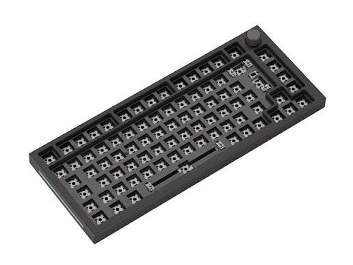
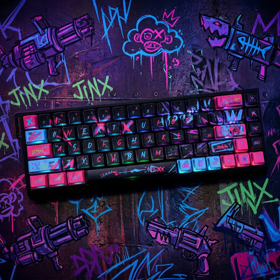
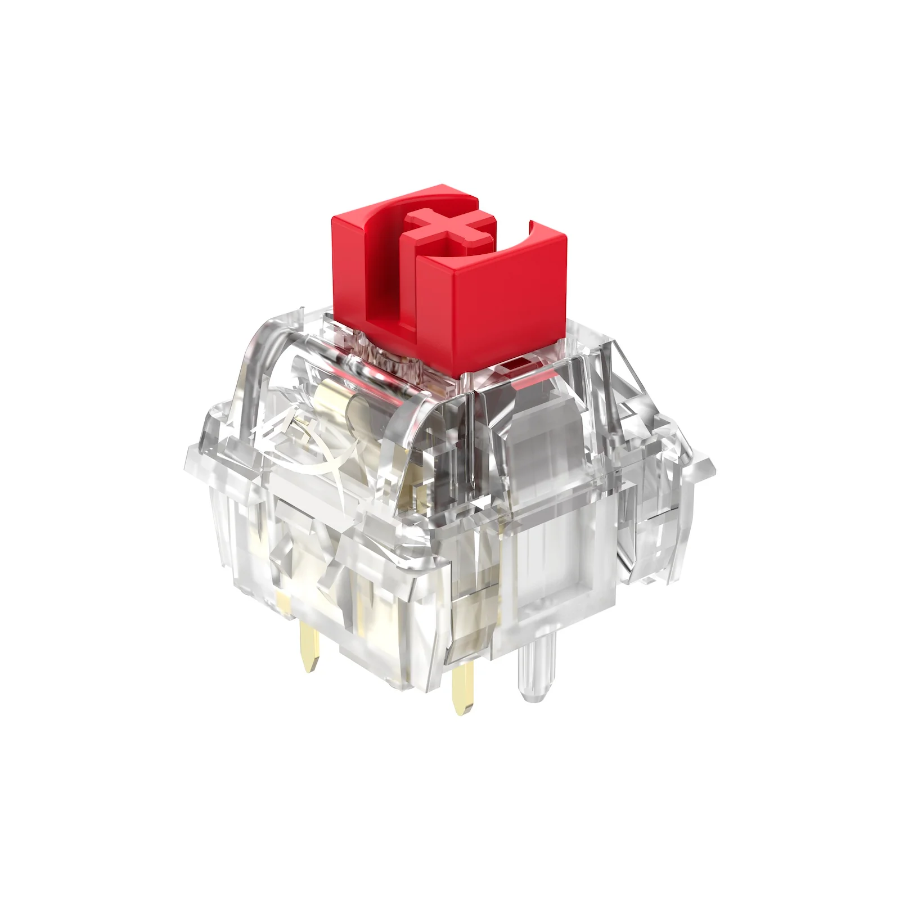
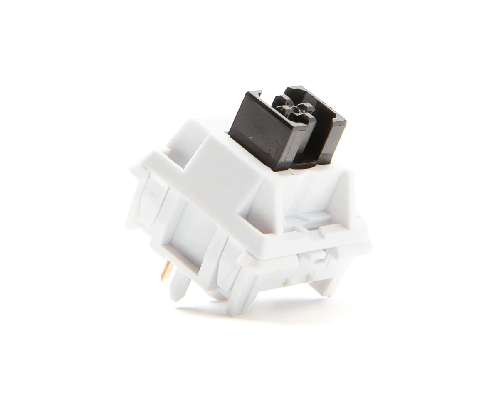
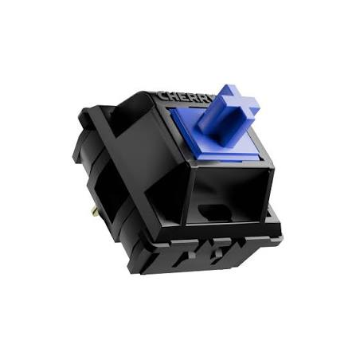
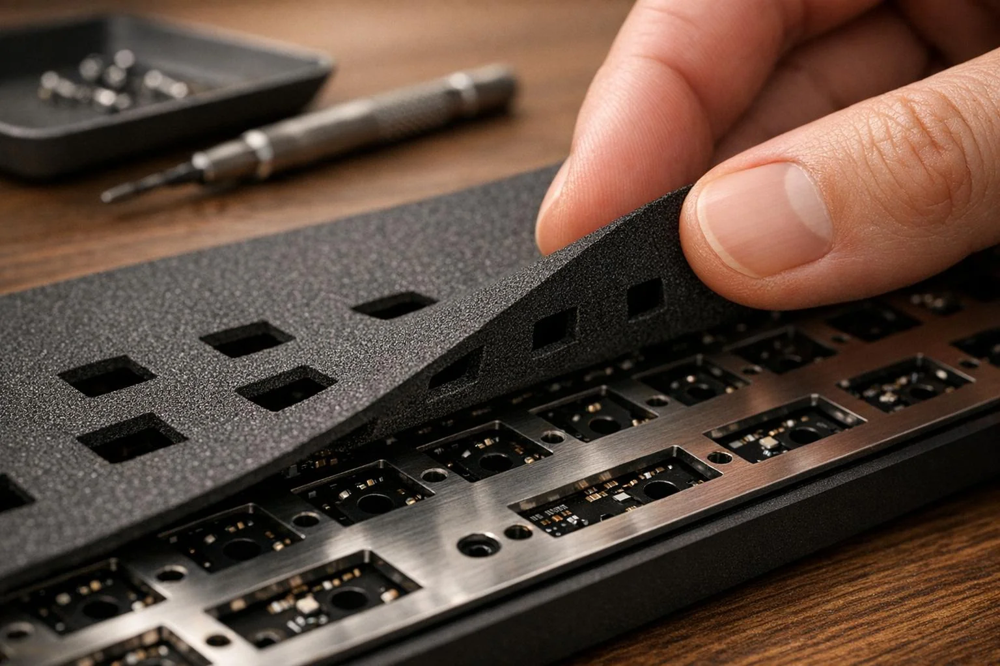
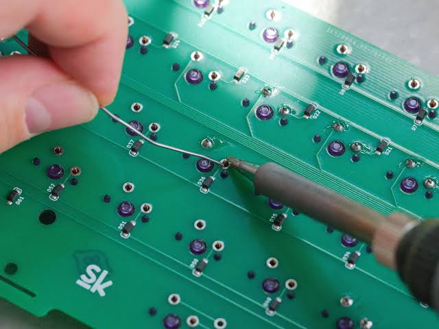

Каталог сервісів
1. Barebone-складання клавіатури

- Монтаж плати, стабілізаторів та корпусу
- Термін виконання: 1–2 дні
- Вартість: від 400 грн
- Перевірка плати перед збіркою
- Гарантія: 3 місяці
2. Повна кастомна збірка "під ключ"

- Підбір корпусу, плати, світчів і кейкапів
- Термін виконання: 3–5 днів
- Вартість: від 1500 грн
- Фото- та відеозвіт про процес збірки
- Гарантія: 6 місяців
3. Змащування лінійних світчів

- Розбирання та змащування пружини й стема
- Термін виконання: 1 день (до 90 шт)
- Вартість: від 500 грн
- Мастило Krytox 205g0 / 105
- Гарантія: 3 місяці
4. Змащування тактильних світчів

- Змащування для чіткого тактильного відгуку
- Термін виконання: 1–2 дні
- Вартість: від 600 грн
- Заміна пружин за бажанням
- Гарантія: 3 місяці
5. Змащування кліккі світчів

- Обробка кліккі-механізму без втрати клацання
- Термін виконання: 1–2 дні
- Вартість: від 600 грн
- Полірування контактних штирів
- Гарантія: 3 місяці
6. Шумоізоляція корпусу (foam mod)

- Встановлення піни під плату та в дно корпуса
- Термін виконання: 2–3 дні
- Вартість: від 700 грн
- Матеріали: PE-піна, поролон, tape mod
- Гарантія: 3 місяці
7. Пайка плати та встановлення hot-swap

- Заміна роз'ємів, пайка світчів напряму
- Термін виконання: 1–3 дні
- Вартість: від 550 грн
- Встановлення hot-swap сокетів
- Гарантія: 6 місяців
8. Тюнінг стабілізаторів

- Змащування, band-aid мод, кліпси
- Термін виконання: 1 день
- Вартість: від 350 грн
- Заміна на стабілізатори іншого бренду
- Гарантія: 3 місяці
Повернутись на Головну сторінку